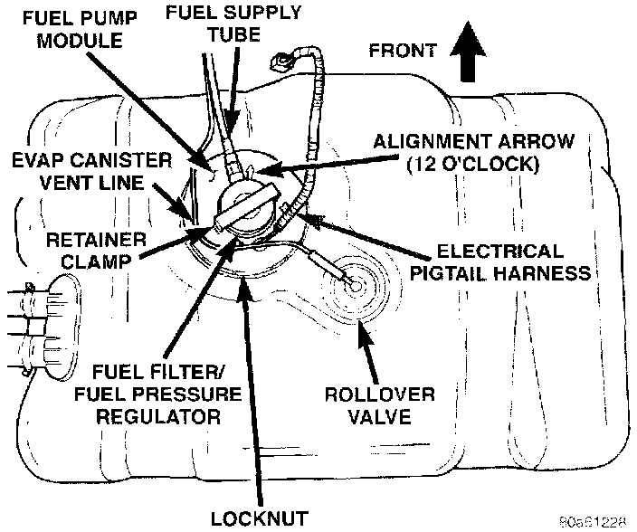
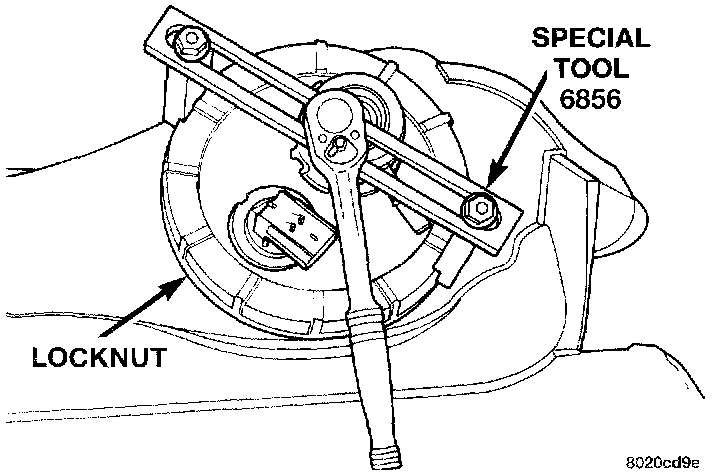

Fuel Pump: Service and Repair
Fuel tank removal will be necessary for fuel pump module removal.
REMOVAL
WARNING: The fuel system is under a constant pressure (even with the engine off). Before servicing the fuel pump module, the fuel system pressure must be released.
1. Drain and remove fuel tank.
2. Thoroughly wash and clean area around pump module to prevent contaminants from entering tank.
Fig. 25 Top View Of Fuel Tank & Fuel Pump Module:

Fig. 26 Locknut R&R - Typical:

3. The plastic fuel pump module locknut is threaded onto fuel tank (Fig. 25). Install Special Tool 6856 to fuel pump module locknut and remove locknut (Fig. 26). The fuel pump module will spring up when locknut is removed.
4. Remove module from fuel tank.
INSTALLATION
CAUTION: Whenever the fuel pump module is serviced, the module gasket must be replaced.
1. Using a new gasket, position fuel pump module into opening in fuel tank.
2. Position locknut over top of fuel pump module.
3. Rotate module until arrow (Fig. 22) is pointed toward front of vehicle (12 o'clock position). This step must be done to prevent float/float rod assembly from contacting sides of fuel tank.
4. Install Special Tool 6856 to locknut.
5. Tighten locknut to 34 Nm (25 ft. lbs.) torque.
6. Rotate fuel filter/fuel pressure regulator until its fitting is pointed to 11 o'clock position.
7. Install fuel tank.